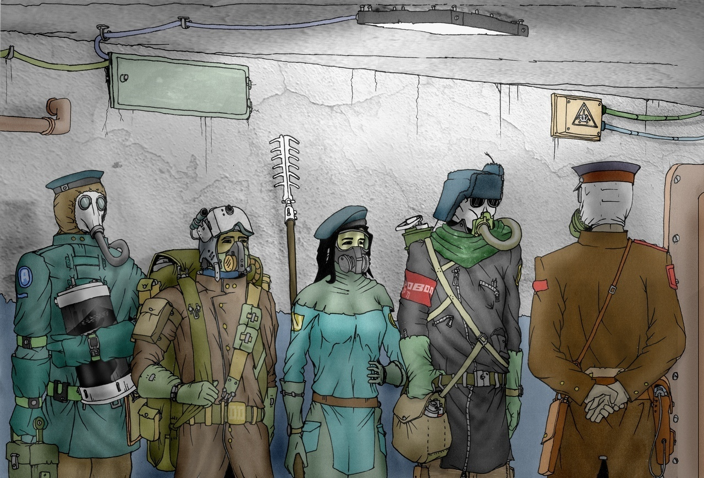

Ликвидаторы
Общее понятие
Ликвидаторы - люди, как видно из названия, занимающиеся ликвидацией последствий самосбора. Каждый житель Гигахруща мужского пола, достигший восемнадцатилетия, не имеющий высшего образования или не получающий его обязан отслужить ликвидатором в течении двух лет. Однако не стоит считать, что отряды ликвидаторов формируются исключительно из призывников. Значительную их часть составляют профессиональные ликвидаторы-добровольцы. В основном это бывшие срочники, которые смогли дослужить до дембеля.
Экипировка
Костюм РБХОПЗ.
Данный костюм состоит из противогаза, кевларового комбинезона и защитного плаща из прорезиненной ткани или синтетической кожи. В зависимости от модификации в состав костюма могут входить каски, металлические бронепластины, фонарики, фильтрующий противогаз может быть заменён изолирующим и так далее. Наиболее продвинутые виды костюма могут выдержать прямое попадание пули 12 калибра и пламя напала в течение десять минут. К сожалению, этого не всегда бывает достаточно, чтобы спасти жизнь ликвидатора.
Встречается в модификациях РБХОПЗ-1, РБХОПЗ-2О, РБХОПЗ-2Т, РБХОПЗ-2М, РБХОПЗ-4 и их вариациях.
Дробовики.
Дробовики предпочитаются ликвидаторами другим видам огнестрельного оружия за разнообразие боеприпасов (от разрывной картечи до одноразовых химических лазеров) и высокое разрушительное действие даже одного выстрела. Обычно под дробовиком понимается помповый дробовик ЧИЖ-3. Наравне с ним срочников вооружают двустволками, а самым отличившимся ликвидаторам выдают полуавтоматический РБ-91 с коробчатым или барабанным магазином.
Топор.
Двуручный боевой топор, похожий на пожарный. Выдаётся всем ликвидаторам, и потому иногда является их единственным оружием.
Огнеметы.
Не смотря на то что самым многочисленным видом оружия является ЧИЖ-3, образ ликвидатора неразрывно связан с ранцевым огнемётом РОКС-47. В условиях Гигахруща ограниченная дальность не является критическим недостатком, в то время как его напалм благодаря своей вязкости и огромной температуре горения способен уничтожить даже слиземонстров и плесень, неуязвимых для других видов оружия. Менее известным, но не менее эффективным является одноразовый реактивный огнемёт ШМК, единственного снаряда которого достаточно чтобы сжечь всё живое и неживое в пределах двух квартир, расположенных на одной лестничной площадке.
Жернов.
Жернов представляет собой два вращающихся стальных диска радиусом 75 сантиметров и толщиной два дециметра, укреплённых на гусеничной тележке. Диски сдавливаются гидравлическими поршнями и имеют регулируемую высоту, чтобы их всегда можно установить их на уровень пола. Предназначен для перемалывания личинок, быстро регенерирующих и трансформирующихся существ, выведенных из строя другим оружием.
ПТРС.
Противотанковое ружьё Семёнова. Никто точно не скажет, почему оно так называется и что такое танк, но теперь оно используется против тяжелобронированных или просто массивных целей. Переноска ПТРС осуществляется двумя ликвидаторами, а стрельба из него возможна только в состоянии лёжа. Так как неудачный выстрел может повредить гермодверь или стену, рекомендуется проявлять особую осторожность при обращении с этим оружием.
Ручной УФ прожектор.
Ослепляет тварей, имеющих глаза, доставляет боль тем, что не имеют кожи, и прогоняет тех, что похоже не имеют материального тела.
Фугасный заряд.
Тонкая металлическая коробка, заполненная взрывчаткой и мелкими металлическими шариками. Закрепляется на груди ликвидатора под костюмом. Может быть активирована как самим ликвидатором, так и дистанционно.